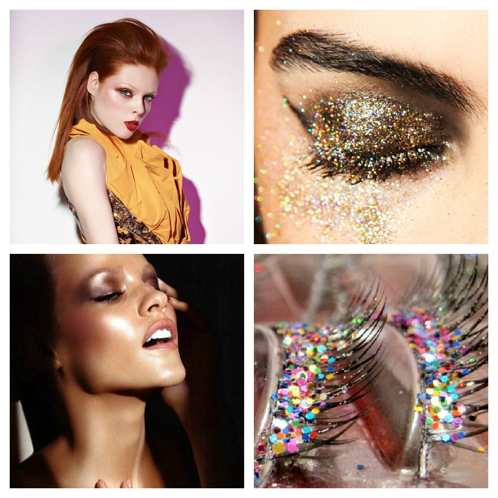
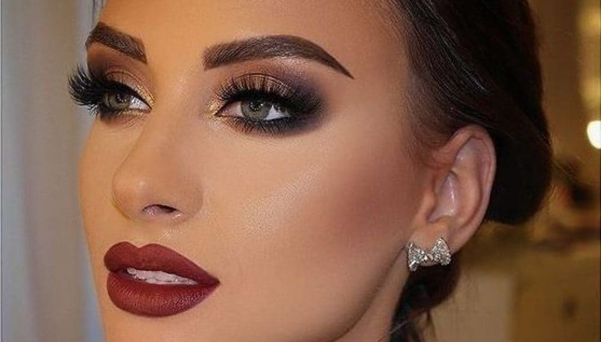
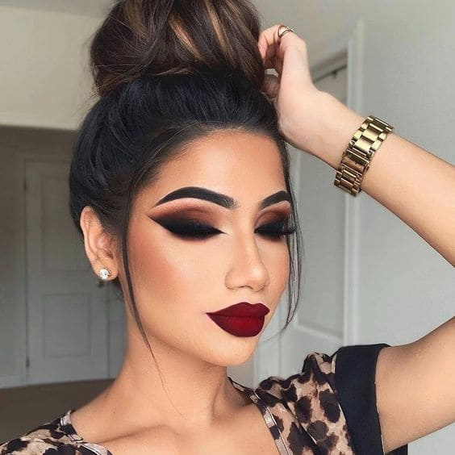
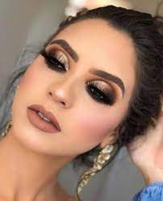
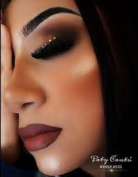
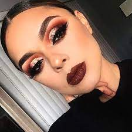

El maquillaje de noche tiene algunas particularidades que el
maquillaje de día no las tiene. Por empezar cuando se trata de un maquillaje de noche te puedes permitir jugar mucho más con colorido, texturas
y brillos o elementos tales como purpurinas o piedrecitas que darán a tu makeup un aire muy bueno. Hay quienes aseguran
que para la noche es mejor usar bases de maquillaje de mayor cobertura o más oscuras, pero esto no es necesario.
La piel siempre debe verse natural tanto en un maquillaje de día como en un maquillaje de noche.
Cuando digo que en un maquillaje de noche podemos recrearnos con texturas y brillos hablo de los efectos que
podemos crear con iluminadores satinados, sombras metalizadas o pigmentos ultra brillantes. Puedes recurrir al
clásico ojo ahumado que es un maquillaje que jamás pasa de moda pero agregar a este purpurina o sombras metal en
párpado móvil para crear un maquillaje diferente y de tendencia.Si bien la base de maquillaje debe ser siempre la
del tono de tu piel, a tu base de maquillaje habitual puedes añadirle una pizca de pigmento en tono dorado o plata
para lograr una piel completamente luminosa.
Debe ser más intenso que el look de día. La clave principal de este tipo de maquillaje,
es utilizar productos de larga duración que resistan sin alteraciones durante horas y darle
un toque especial. Conoce tu mejor opcion :
Paso a paso para llevar a cabo un maquillaje para la noche:
|  |  |  |
|  |  |